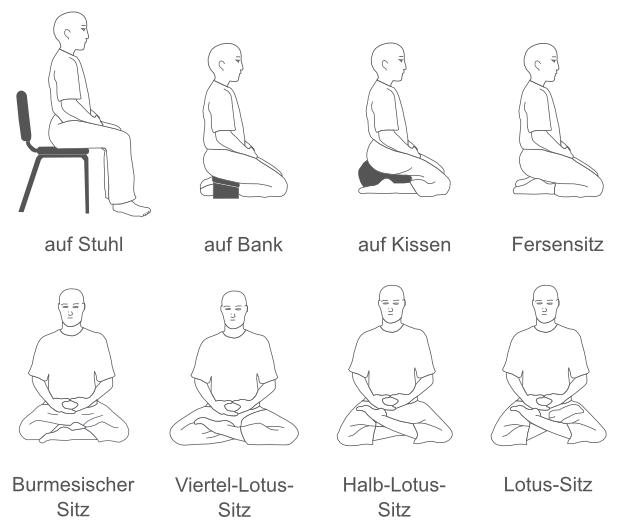

Diese Meditation ist ein Innehalten in unserem Alltag, der vielleicht stressig, sorgenvoll oder wild und unruhig ist. Körperliche Zustände, angenehme und unangenehme Erfahrungen, Gemütszustände (Nervosität, Angst, abgelenkt sein,...) und geistige Konzepte ("Ich muss ganz viel leisten." "Ich bin immer so müde." "Ich bekomme das nicht hin." ... ) können uns verwirren und uns von uns selbst ablenken. Durch die Meditation können wir Distanz zu diesen gewinnen und erkennen, wer wir wirklich sind. Setz Dich mit geradem Rücken entspannt hin und betrachte Deinen Atem. Wenn er lang ist, ist er lang. Wenn er kurz ist, ist er kurz. Mit wachsender Übung wird die Meditation immer tiefer und es können Glücksgefühle auftreten, die alles Körperliche in den Hintergrund treten lassen. Eine noch tiefere Meditation kann eine von allem unabhängige Freude auslösen, so dass alle angenehmen und unangenehmen Erfahrungen in den Hintergrund treten. Wird die Meditation noch tiefer, wird das Herz friedvoll, so dass Gemütszustände in den Hintergrund treten. Die tiefste Stufe, auf der man verweilen sollte, ist ein freudvoller Gleichmut, der alle geistigen Konzepte in den Hintergrund treten lässt. So lernt man mit der Zeit, Körperlichkeit, Erfahrungen, Gemütszustände und geistige Konzepte immer besser kennen. Die Wahrnehmung dieser vier Grundlagen (Körperlichkeit als Körperlichkeit, Erfahrungen als Erfahrungen, Gemütszustände als Gemütszustände und geistige Konzepte als geistige Konzepte) schafft Distanz und lässt uns unabhängig und frei handeln. Wir können durch diese Alltagspraxis Hilfreiches fördern und Schädliches vermeiden. Hierbei sind keine schnellen Ergebnisse zu erwarten, aber langfristig wird sich die Lebensqualität steigern. 10 Minuten Meditation pro Tag in Kombination mit Alltagspraxis reichen aus!
